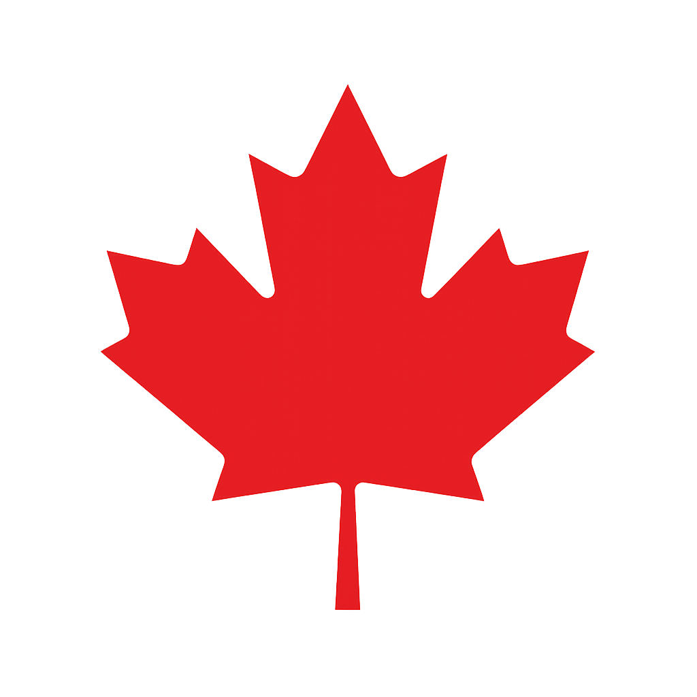
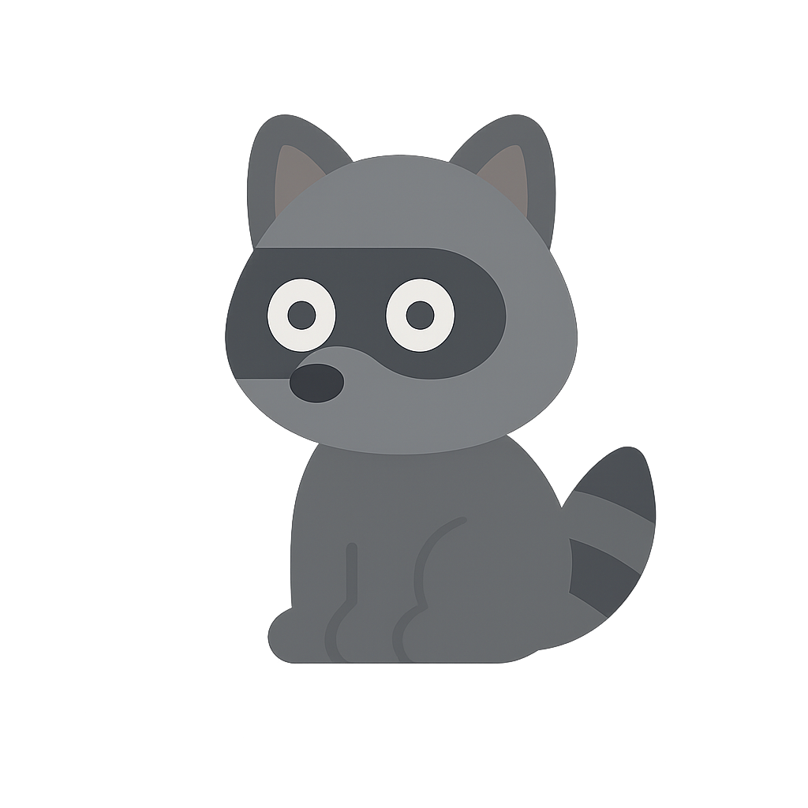

Welcome to TTC Delay Insights:
Data today, better commutes tomorrow.
For the best experience, rotate your phone horizontally.
Use the Plan your buffer time tool below to plan your trip and stay ahead of TTC delays.
Explore the Toronto Subway: Delay Stats interactive map to see delay stats for each station.
Want more? Explore the Overview for in-depth insights and recommendations,
check the Delay Leaderboard to see which stations have the most time lost this year,
or play the TTC Delay Dodge Game:
dodge delays caused by track-intruding raccoons, grab Jamaican patties for bonus points, and see if you can beat the high score before your next train!